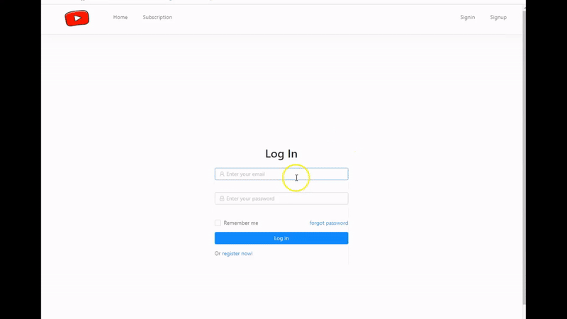
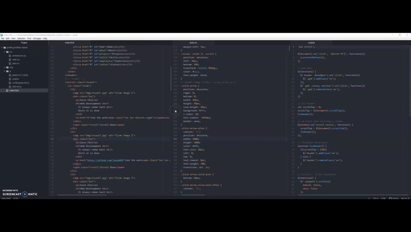
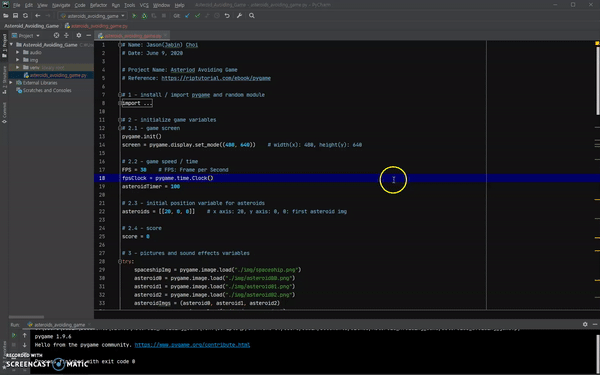

Jason Choi
Web Developer
A recent Software Engineering graduate with a one-year Technical Support Analyst (Co-op) experience at BlackBerry Limited and seeking opportunity in web development. Highly poised and dedicated with strong education and training in design principles and programming languages.
They say, "Knowledge is power" and I say, "Knowledge is not without information."
Featured Projects
View selected projects below. More information can be found at MY GITHUB.
YouTube Clone Web site
- YouTube clone website built with React.js, Node.js and MongoDB
- Developed Log In/Out, Register, Subscription, Video Upload, Comments, and Likes/Dislikes features
- Users can sign in/up, upload/subscribe videos, leave/reply to comments, and click on likes/dislikes button
Responsive Profile Website
- Personal profile website built with HTML, CSS, JavaScript, jQuery, and Scrolla.js
- Developed webpages such as Home, About Me, Projects, Skills, Experience, and Contact
Asteroids Avoiding Game
- Simple asteroids avoiding game using Python
- Players control a single spaceship in an asteroid field
- Speeds up over time and it becomes harder to evade asteroids
Work Experience
Enterprise Technical Support Analyst (Co-op)
BlackBerry Limited
Jan 2019 ~ Dec 2019
- Customer satisfaction survey results increased to 93% from 88% in one year.
- Resolved customer software issues (Blackberry UEM, Work, BBM Enterprise etc.) via phone, email and remote control (WebEx).
- Supported the installation and upgrading of Blackberry UEM (Unified Endpoint Management).
- Analyzed SQL scripts and log files to monitor and trace potential software defects and root-causes.
- Worked cross-functionally with other teams such as Engineering when escalating cases to ensure ticket resolution utilizing various additional platforms such as JIRA.
Student Administrative Assistant
Centennial College - International Education Centre
Aug 2018 ~ Dec 2018
- Assisted with clerical needs, answered telephone calls, database management and correspondence.
- Gathered data about international students enrolled in the school program and performed data pre-processing with Microsoft Excel.
- Utilized Microsoft Office programs to compile data gathered from various sources.
- Performed administrative support tasks for International Education centre.
- Obtained and organized files and research papers.
Education
Centennial College - Scarborough, ON
Associate's Degree - Software Engineering
Jan 2018 ~ May 2020
Grade: 4.1 / 4.5
ChungNam National University - Daejeon, Republic of Korea
Bachelor's Degree - Electronics Engineering
Mar 2010 ~ May 2014
Grade: 3.5 / 4.5
2020 Data Science Professional Certificate - IBM
Jan 2020
See Details